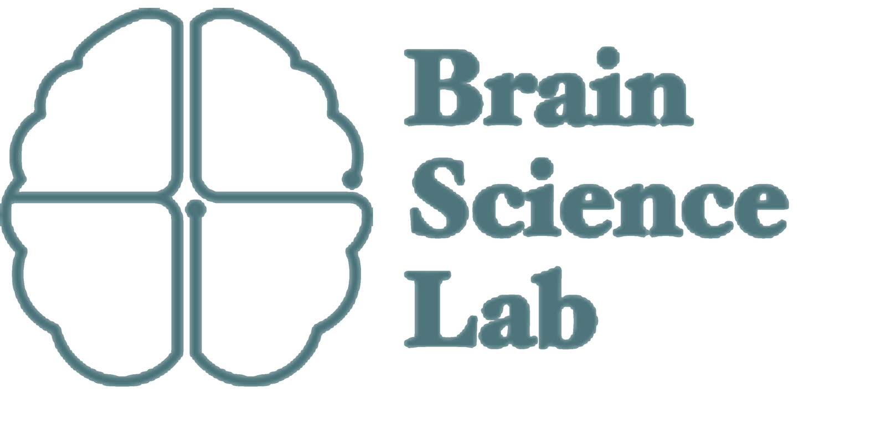

Thanks for your interest.
「私」の謎に迫る
本研究室は，解離性同一症（DID）にみられる別人格状態間の脳機能の違いを fMRI（機能的磁気共鳴画像）で計測し，人格同一性の神経科学的理解と，診断・治療の改善に資する基礎研究を行っています。 京都大学・京都工芸繊維大学・立正大学 の共同研究チームとして，関東・関西の２拠点で実験を実施しています。

ブレインサイエンス研究室 京都工芸繊維大学 情報工学・人間科学系Thanks for your interest.
本研究室は，解離性同一症（DID）にみられる別人格状態間の脳機能の違いを fMRI（機能的磁気共鳴画像）で計測し，人格同一性の神経科学的理解と，診断・治療の改善に資する基礎研究を行っています。 京都大学・京都工芸繊維大学・立正大学 の共同研究チームとして，関東・関西の２拠点で実験を実施しています。
Updates
論文・学会発表・メディア・SNS の最新動向です。各カードのリンクから本体にアクセスできます。
Geometric modes of cortical organization reveal a unified self-state signature disrupted in Dissociative Identity Disorder.
bioRxiv で読む →日本心理学会第 89 回大会（2025 年 9 月，東北学院大学）でポスター発表し， 学術大会優秀発表賞を受賞しました。
抄録（J-STAGE）→「学問と国防の難しい関係 — 防衛省が大学の研究支援を拡大」をテーマにした番組で取材を受け，本研究の背景についてお話ししました。
YouTube で視聴 →Participate
関東・関西の２拠点で実験を実施しています。 参加条件・所要時間・謝礼はどちらのサイトでも共通 で，撮像場所のみが異なります。ご都合のよい拠点をお選びください。
ご応募から実験までの間に，担当医の先生との事前ミーティングをお願いしています
研究へお越しいただく前に，研究者（梶村）から担当の精神科医の先生にご連絡させていただき，研究参加についてご相談・ご了承を得たうえで改めて参加のご案内をいたします。研究と日常の治療がお互いに干渉しないようにし，ご本人の安全を最優先するための手順です。お手数をおかけしますが何卒ご理解ください。
What we measure
MRI を用いて，安静時・人格交代時・簡単な課題実施時の脳機能を複数回計測します。 具体的な課題内容は，参加者の方の特性に合わせて柔軟に設計いたします。
MRI 内でじっとしている状態の脳機能を計測します。参加者は，ただ静かに横になっていてください。
MRI 内で，ご自身のタイミングで人格交代を行っていただき，その際の脳機能を計測します。研究者の合図ではなく，参加者の主観的なタイミングを尊重します。
人格間で反応や能力に差が出る簡単な課題を，それぞれの人格状態でご実施いただきます。具体的な内容は，事前面談で参加者の方とご相談のうえ決定します。
Process
個人情報を含むやりとりは，X の DM ではなく，外部フォームとメールで完結する設計にしています。
本サイトの応募フォーム（または kajimura@kit.ac.jp 宛のメール）で，ご都合のよい拠点・連絡先・担当の精神科医の先生のご所属をお知らせください。
研究者（梶村）から担当の精神科医の先生にご連絡させていただき，研究参加についてご相談・ご了承を得たうえで，ご本人へ改めて参加のご案内をいたします。
オンライン（Zoom 等）または対面で，ご質問にお答えし，ご納得いただいたうえで同意書にサインをお願いします。
撮像場所（関西：京大病院／関東：東大本郷）で計測を実施します。体調が第一優先ですので，当日キャンセルや途中中断も可能です。
FAQ
本研究は基礎研究であり，診断書の発行や治療の代替を目的とするものではありません。 ご参加いただいても，現在受けておられる医療機関での治療や診断には一切影響しません。 研究参加と治療継続は完全に独立しています。
ご応募時に担当医の先生のご所属をお知らせいただいたあと， 研究者（梶村）から先生に直接ご連絡し，研究の趣旨と参加スケジュールをご説明したうえで， ご本人の参加についてご相談・ご了承を得ます。先生から了承が得られたあとに， 改めてご本人へ事前面談のご案内をいたします。先生への連絡時期について ご希望（例：先生の外来日に合わせて等）があれば，応募時にご記入ください。
安全な実施のため，現在の医療機関で 1 年以上の治療継続中であることを 参加条件とさせていただいています。これは，研究と日常の治療がお互いに干渉しないようにし， ご本人の安全を最優先するための判断です。診断をまだ受けておられない方は， まずは医療機関を受診されることを強くお勧めいたします。
いつでもご自由に中止していただけます。理由をお伝えいただく必要もありません。 撮像中に体調が変化したり，人格状態が不安定になったと感じられた場合は， すぐにブザーを押してお知らせください。
個人を特定できない形（匿名化）で管理し，所属機関の倫理委員会の規定に従って取り扱います。 研究論文・学会発表で結果を公表する場合も，個人が同定される情報は一切公開しません。 データの保管期間・廃棄方法は同意書に明記しています。
申し訳ございませんが，研究参加に関する個別のご相談は DM では受け付けておりません。X の DM は ご本人確認やセキュリティの観点で適さないため，応募フォームまたは kajimura@kit.ac.jp 宛のメールをご利用ください。 公開ポストの一般的なご質問へのリプライは可能な範囲でお返しいたします。
交通費は別途お支払いいたします。長距離移動が必要な場合は， 日程や宿泊についてもご相談ください。ご無理のない範囲で柔軟に対応します。
Contact
研究参加に関するご相談はフォームまたはメールで承ります。フォーム送信後，研究者から１週間以内に メール でご連絡いたします（土日祝・出張中は遅れる場合があります）。
以下のフォームから，ご希望の拠点・連絡先・簡単な背景をお知らせください。 個人を特定する情報はフォーム送信時点では最小限に留め，詳細は折り返しのメールでお尋ねします。
応募フォームを開く（準備中）